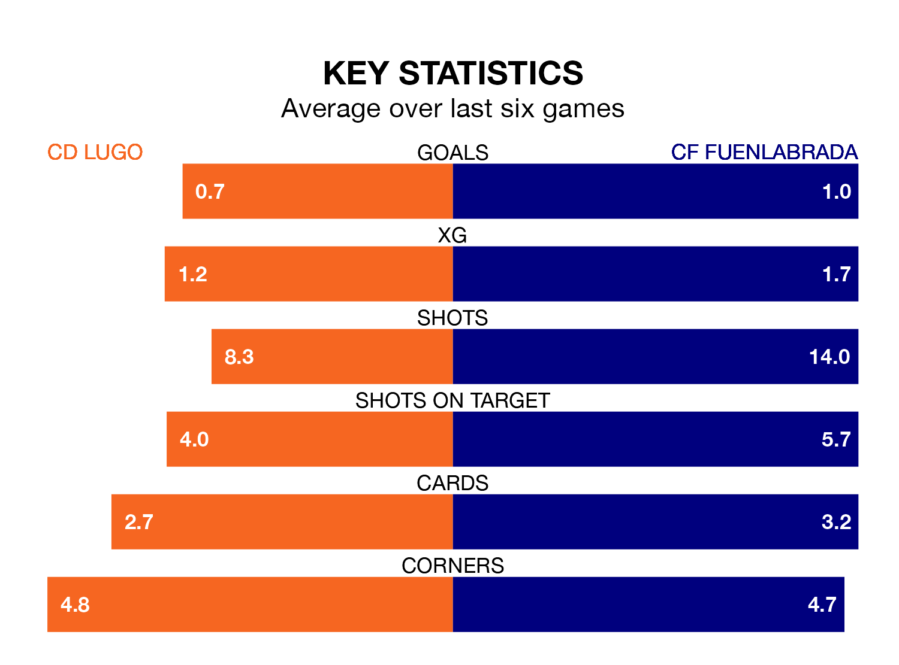

CD Lugo host CF Fuenlabrada on Sunday at the Estadio Anxo Carro in Primera Division RFEF Group 1.
In their last league match, on February 17, Lugo beat CD Teruel 2-1 away, with their goal scored by Sergio Aguza Santiago (two).
Fuenlabrada lost, 2-0 away at Unionistas de Salamanca CF on February 18.
In the last 10 years, Lugo and Fuenlabrada have played each other on seven occasions. They won two each, and they drew three times.
On average, Lugo scored 0.7 goals and Fuenlabrada 0.9 in those matches.
Their last meeting was on September 10, when they played out a 0-0 draw.
Lugo are in mixed form in Primera Division RFEF Group 1, with two wins and two draws from their last six games.
With a win and two draws over that period, Fuenlabrada's form is worse – they have taken five points from 18, compared to the home team's eight.
With 19 goals in 24 games so far this season, Lugo are scoring at below the league average rate with 0.8 goals per game. But they are conceding fewer than average too, letting in 22 goals at a rate of 0.9 per game.
The visitors, meanwhile, are average scorers, with 1.0 goal per game. They have also conceded 1.0 goal per game.
In Luis Alfonso Ledesma Galán, Lugo have one of the league's most on-form strikers so far this season. He has notched six goals in 20 appearances, to sit seventh in the scoring charts.
His goal rate of one every 267 minutes is quicker than that of Fernando Ruiz Izaguirre, Fuenlabrada's top scorer with a goal every 377 minutes, and a total of five goals in 22 games.
The hosts are ninth in the table after 24 games, of which they have won nine and drawn seven, earning 34 points.
Fuenlabrada are three places behind Lugo in 12th, with seven wins and nine draws putting them on 30 points.
Updated: 12:18 (UTC), 19/02/24